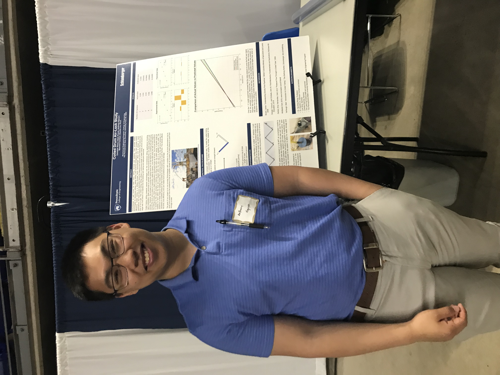

I am passionate about building robots and creating software to enable robots to make intelligent decisions and behaviors in complex, dynamic
environments.
I am a dedicated professional specializing in Unmanned Aerial Vehicle (UAV) coordination for defense applications.
With a background in Mechanical Engineering and focus on algorithmic development, I focus on developing and implementing advanced strategies for UAV operations,
ensuring optimal performance and efficiency in critical missions. My work involves coordinating multiple UAVs for various defense tasks. I have extensive experience in C++ and Python,
which I leverage to create innovative solutions for complex challenges in the field.I am passionate about advancing UAV technology and
its applications in defense, striving to enhance the capabilities and reliability of UAV systems. Through my work, I aim to contribute
to the safety and success of defense missions, providing cutting-edge solutions to meet evolving demands.
When I'm not working on UAV projects, I enjoying my time with my lovely partner, cooking dinners and trying new foods, and cuddling with my 3 cats.
In my graduate studies I practiced and studied a lot of different aspects of autonomous robotics, state estimation and optimal control
being my primary interests. Below are some of my projects that I have done in my free time to fully understand some parts of the autonomy stack
Will do a write up for each of these projects soon! Linking to github for now
Miscellaneous
Vision
Motion Planning
Control